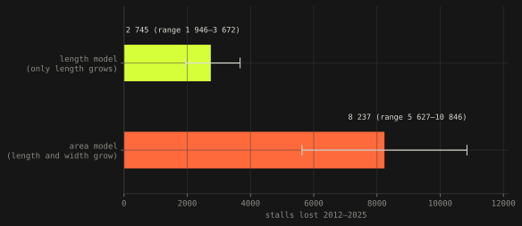
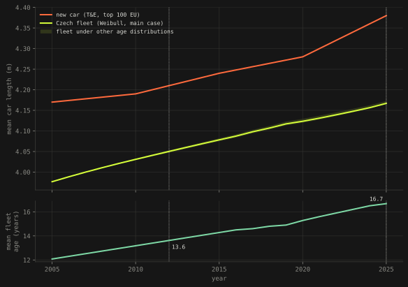
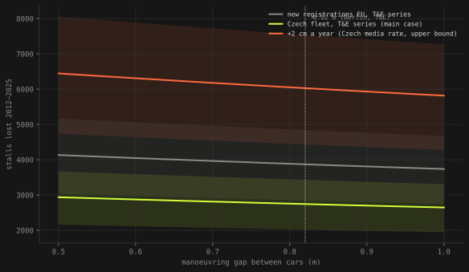
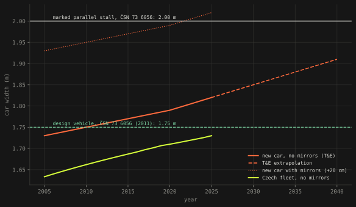
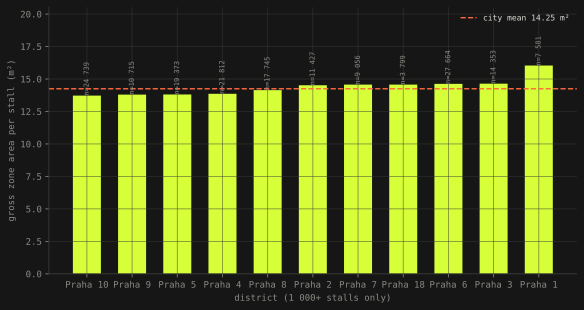

Text 01 · Prague · 8 September 2026
How many parking spaces Prague lost to bigger cars
About 2 745 stalls since 2012, 1.6 % of the paid zones. Smaller than the headlines, and for reasons that are more interesting than the number.
- stalls lost 2012–2025
- 2 745 1 946 – 8 058 across all assumptions
- share of paid-zone capacity
- 1.6 % 1.1 – 4.6 %
- roadway taken by wider cars
- 2.76 ha not counted as parking anywhere
- price of a resident permit
- 89 Kč / m² / year Fabia or Kodiaq, same price
Cars are getting bigger. Everyone can see it, Transport & Environment has measured it, and the obvious next sentence is that they must be eating the parking. The question this text asks is how much, for one city, from the city's own data. The answer is less than the thesis of "carspreading" would suggest, and the reason it is less is the useful part.
Prague's paid parking zones are published as 16 874 polygons on the city's ArcGIS server, each with an area in real square metres (the server runs in S-JTSK, so nothing needs reprojecting; the ArcGIS Online copy in Web Mercator overstates every area by a factor of 2.43 at Prague's latitude, which is a trap worth naming). Summed, the zones hold 168 456 stalls, which is 1.4 % above the figure the city's road authority published for December 2024, in the right direction: capacity has been added since. Two independent server aggregations, by zone type and by district, agree on the total area to 0.0 m².
Why the answer is a length, not an area
The natural calculation is area divided by footprint: take the zone area, divide by the outline of a car plus a manoeuvring gap, and see how many fewer cars fit today than in 2012. It gives 5 600 to 10 800 lost stalls, and it is wrong for most of Prague, because most of Prague parks parallel to the kerb.
On a kerb, capacity is length divided by pitch, where pitch is the car's length plus the gap. Width does not enter the formula at all. A car that is 1.90 m wide instead of 1.75 m does not push its neighbour out, because its neighbours are behind and in front of it. It takes the extra width from the driving lane, which is a real cost, but a different one. The area model books that lane as lost parking. The difference between 2 745 and 8 237 stalls is not a data problem; it is a question problem.

The length model needs no kerb length, which is fortunate because the server would not give it: with the kerb held constant, stalls in 2012 equal stalls today times the ratio of the two pitches. Today's count is the anchor. The gap is 0.82 m, not chosen by hand: T&E reports a 5.20 m pitch for 2025 from Berlin traffic data and a 4.38 m car, and the difference lands in the middle of the 0.5 to 1.0 m range the brief asked to test.
The street is parked by the fleet, not by the showroom
The second correction is bigger than the first. New cars in the EU's top 100 grew 17 cm in length between 2012 and 2025. But the cars on Prague's streets are not new cars; they are the fleet, and the Czech fleet aged from 13.6 to 16.7 years over the same period. Weighting each model year by a survival curve and calibrating to that mean age, the average parked car grew 11.7 cm, not 17. The ageing fleet absorbed about a third of the growth. The shape of the age distribution (Weibull, exponential, uniform) moves this by hundredths of a centimetre; the model does not care.

Put together: 11.7 cm more car at a 0.82 m gap, on the 68 % of stalls that T&E assumes are parallel (a Berlin figure, the largest single uncertainty here), and Prague's current zones would hold 2 745 more cars if they were parked by 2012's fleet. That is 1.6 % of capacity. Over the full grid of assumptions the range is 1 946 to 8 058 stalls, and the top of the range only appears with the 2 cm-a-year growth rate quoted in Czech media, for which no primary source could be found.

Where the width went
Cars in the zones are 5.8 cm wider than in 2012. On parallel stalls that is 27 598 m², 2.76 hectares of roadway, the area of roughly 2 000 of today's stalls, and it appears in no parking statistic because it was never parking. It came out of the driving lane.
The more graphic number: an average new car with mirrors folded out is 2.02 m wide. The marked parallel stall in the Czech standard ČSN 73 6056 is 2.00 m. New cars crossed that line around 2022. The standard's own design vehicle, from 2011, is 1.75 m wide; new cars had outgrown it before the standard was published.

The price does not know any of this
A resident permit costs 1 200 Kč a year. At 13.5 m² of net zone area per stall, that is 89 Kč per square metre per year, whether the car is a Fabia or a Kodiaq. The price rations neither the number of cars nor their size. This part of the thesis survives the data intact, and it is stronger than the capacity part.
What was checked, and what was not
Things that passed: 27 model tests, including the agreement of the continuous formula with a Monte Carlo over the real distribution of segment sizes (16 784 segments, median 8 stalls; integer effects add 0.12 percentage points, not more); the stall totals against the road authority's published numbers; district-level geometry, which turned out uniform, 13.7 to 16.0 m² per stall, so no Simpson's paradox hides two opposite cities inside one mean.

Things that did not: T&E's headline that European cities lose 8.5 to 14 % of parallel parking by 2040 could not be reproduced from T&E's own published parameters, which give 3.4 to 4.0 %. The factor of two to four is unexplained, so the headline is cited here as their modelling, not as a check on this one. Also unverified: the share of parallel stalls in Prague (the answer sits in the polygons' shape, width 2 to 2.5 m means parallel, 4.5 to 5.5 m means perpendicular, and needs the individual features rather than aggregates); car dimensions for cars registered in Czechia rather than the EU top 100 (one Czech data point, 111 models in 2019, sits 1.4 cm wider and 2.8 cm longer than the EU series, so the transfer is defensible, but it is a transfer); and the age structure of Prague's fleet specifically, which is probably younger than the national fleet.
One phrasing to be careful with. "Prague lost 2 745 stalls" is shorthand. The model does not know how many stalls Prague had in 2012; it holds today's kerb constant and asks how many 2012 cars it would take. The precise sentence is: on today's zone area, 2012's fleet would park 2 745 more cars.